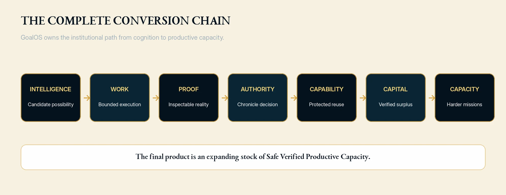

MONTREAL.AI × GoalOS
GoalOS — institutional operating system
Mission, proof, capability, memory, identity, governance, and treasury in one institution.
Static public siteNon-confidential onlyBounded claims
1
Direction
Turn a consequential objective into a mission contract, proof debt, budget, and required decision.
2
Execution
Assemble AGI Jobs, tools, evaluators, policies, data, and authorized people.
3
Evolution
Admit only capabilities that pass proof and a fresh transfer test.
GoalOS may propose. GoalOS may execute. GoalOS may generate its successor. Evidence must record. Independent review must challenge. Chronicle must govern. Reality must decide.
